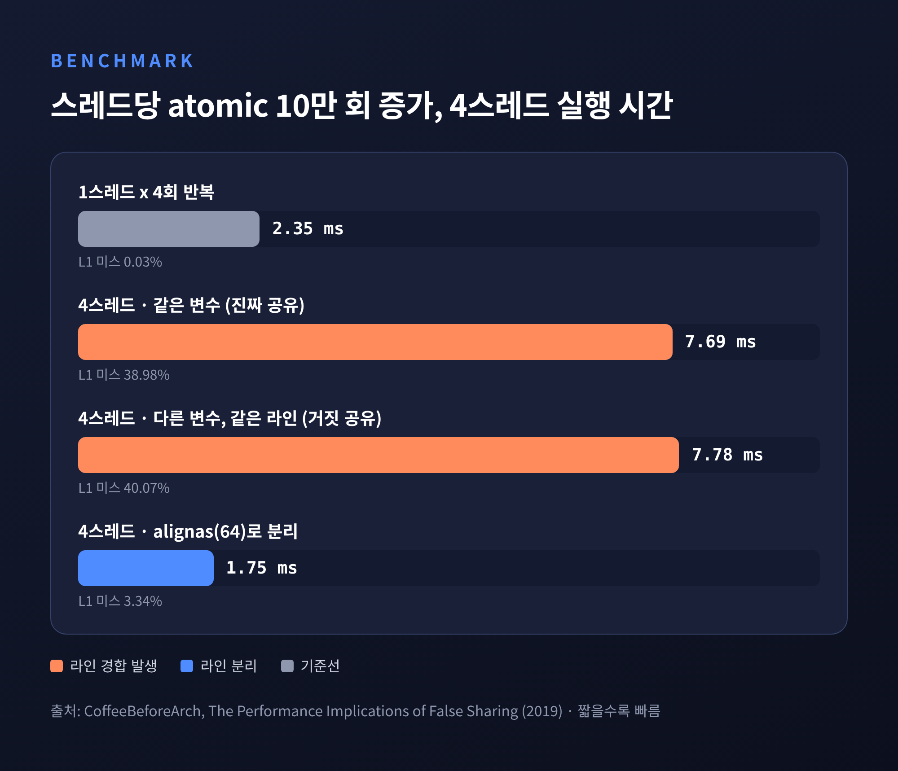
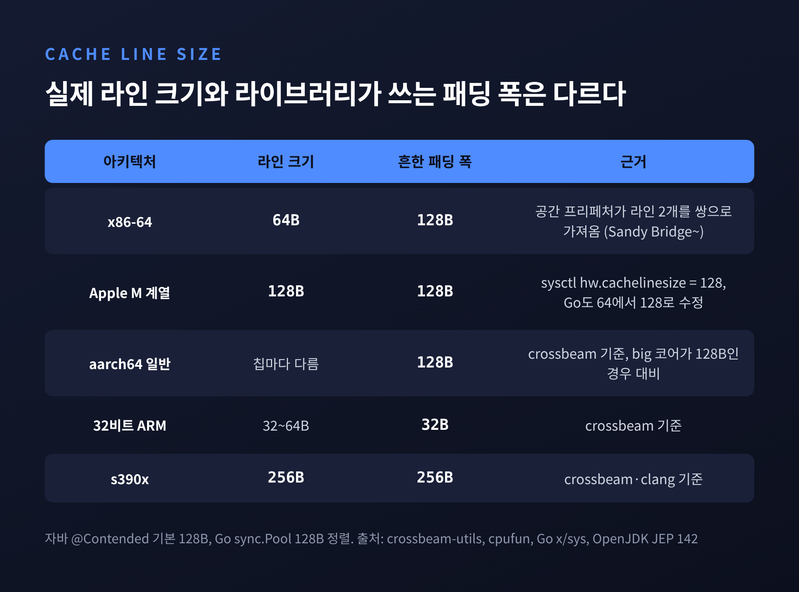
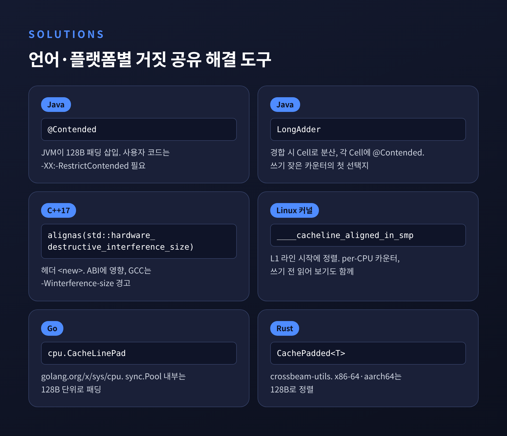

거짓 공유(False Sharing)와 캐시 라인 — 스레드를 늘렸는데 왜 더 느려질까
이번 글에서는 멀티스레드 코드의 숨은 병목인 거짓 공유(False Sharing)를 정리해 보겠습니다. 각 스레드가 자기 변수만 쓰는데도 코어를 늘릴수록 느려지는 현상입니다. 원인은 캐시 라인이라는 하드웨어 단위에 있고, 해결은 대개 몇 줄의 정렬과 패딩으로 끝납니다.
먼저 결론부터 적어 두겠습니다.
- 캐시는 변수가 아니라 캐시 라인(보통 64바이트, Apple M 계열은 128바이트) 단위로 움직입니다.
- 서로 다른 스레드가 같은 라인 안의 다른 변수를 쓰면, 라인 소유권이 코어 사이를 오가며 성능이 몇 배씩 떨어집니다.
perf c2c나 Intel VTune으로 찾고,alignas,@Contended,LongAdder같은 도구로 떼어 놓으면 됩니다. 다만 패딩에도 비용이 있습니다.
■ 데이터를 공유하지 않는데 왜 '공유'일까
CPU 캐시는 메모리를 바이트 단위로 가져오지 않습니다.
일정한 크기의 덩어리, 즉 캐시 라인 단위로 가져오고 관리합니다.
x86 서버와 PC에서는 64바이트가 사실상 표준입니다.
자바 long 여덟 개가 한 라인에 들어가는 크기입니다.
문제는 일관성(coherence) 프로토콜도 라인 단위로 동작한다는 점입니다. 한 코어가 라인 안의 어느 바이트든 쓰면, 다른 코어에 있던 그 라인의 사본은 통째로 무효가 됩니다. 변수 하나만 바뀌었는데 라인 전체가 버려지는 셈입니다.
스레드 A는 countA만, 스레드 B는 countB만 증가시킨다고 해 보겠습니다.
코드상으로는 아무것도 공유하지 않습니다.
그런데 두 변수가 나란히 선언되어 같은 라인에 놓이면 하드웨어는 이를 공유 데이터로 취급합니다.
그래서 이름이 '거짓' 공유입니다.
리눅스 커널 문서는 해로운 거짓 공유의 조건을 두 가지로 정리합니다. 여러 CPU가 같은 라인에 접근할 것, 그리고 그중 최소 하나가 쓰기일 것. 읽기만 하는 변수라도 옆자리에 자주 바뀌는 카운터가 있으면 피해를 봅니다.
■ MESI 핑퐁 — 소유권이 코어 사이를 오간다
MESI 프로토콜 자체는 지난 9월 글에서 다뤘으니 여기서는 짧게만 짚겠습니다. 코어는 쓰기 전에 그 라인의 배타적 소유권을 얻어야 하고, 이때 다른 코어의 사본은 Invalid가 됩니다.
두 코어가 같은 라인의 다른 변수를 번갈아 쓰면 이 과정이 끝없이 반복됩니다. 마틴 톰슨(Martin Thompson)은 이를 라인이 "L3 캐시를 거쳐 핑퐁한다"고 표현했습니다. 코어가 서로 다른 소켓에 있다면 소켓 간 인터커넥트까지 건너야 하므로 더 나빠집니다.
이 현상을 잡아내는 지표가 HITM입니다.
로드한 데이터가 다른 코어의 Modified 상태 라인에서 발견됐다는 뜻입니다.
NUMA 노드를 넘나드는 Remote HITM이 가장 비쌉니다.
뒤에서 다룰 perf c2c는 바로 이 HITM을 세어 범인 라인을 찾아 줍니다.
■ 숫자로 보는 거짓 공유의 비용
여러 실측 결과를 모아 보면 규모가 감이 옵니다.
CoffeeBeforeArch의 C++ 실험이 가장 깔끔합니다.
4개 스레드가 각자 std::atomic<int>를 10만 번씩 증가시키는 코드입니다.
| 방식 | 실행 시간 | L1 로드 미스율 |
|---|---|---|
| 1스레드가 4번 반복 | 2.35ms | 0.03% |
| 4스레드, 같은 변수 (진짜 공유) | 7.69ms | 38.98% |
| 4스레드, 각자 변수인데 같은 라인 (거짓 공유) | 7.78ms | 40.07% |
4스레드, alignas(64)로 분리 |
1.75ms | 3.34% |
눈여겨볼 부분은 두 군데입니다. 거짓 공유는 같은 변수를 두고 다투는 진짜 공유와 비용이 거의 같았습니다. 그리고 스레드 넷이 한 스레드보다 세 배 넘게 느렸습니다. 정렬만 바꾸자 1.75ms로 내려와 그제야 병렬화의 이득이 보였습니다.
다른 자료도 방향이 같습니다.
- Dive Into Systems(C): 1억 개 원소를 세는 코드가 1스레드 0.336초, 2스레드 0.799초, 4스레드 0.767초였습니다. 40바이트짜리 카운트 배열이 라인 하나에 들어가 있었습니다.
- cppreference 예제(C++17): 두 카운터를 한 라인에 두면 약 550ms, 분리하면 약 89ms로 약 6배 차이가 났습니다.
- 자바 JMH(DZone): 2스레드 기준 패딩 버전이 초당 약 2억 3,640만 회, 패딩 없는 버전이 약 6,390만 회로 약 3.7배였습니다.
- Arm Learning Path(자바, Arm Neoverse 서버): 10억 회 증가가 15.5초에서
@Contended적용 후 2.9초로, 약 5.4배 빨라졌습니다. - Intel VTune Cookbook:
linear_regression샘플이 약 3초에서 0.5초로 줄었습니다. 64바이트 구조체 배열이 64바이트 정렬을 보장받지 못해 원소가 라인 경계를 걸친 것이 원인이었습니다.
배율은 3.7배에서 6배까지 다양합니다. 하드웨어와 워크로드에 따라 달라지니 숫자 자체보다 방향을 기억하시면 됩니다.

■ 캐시 라인은 정말 64바이트일까
64바이트가 정답이라고 단정하기는 어렵습니다. 아키텍처마다, 그리고 '라인 크기'와 '안전한 패딩 폭'이 서로 다르기 때문입니다.
x86: 실제 라인은 64바이트입니다.
다만 Intel은 Sandy Bridge부터 공간 프리페처가 64바이트 라인 두 개를 쌍으로 가져옵니다.
그래서 러스트 crossbeam은 x86-64에서 라인을 128바이트로 "비관적으로 가정"합니다.
자바 @Contended의 기본 패딩이 128바이트인 것도 같은 이유입니다.
Apple M 계열: M1에서 sysctl hw.cachelinesize가 128을 반환합니다.
Go의 x/sys/cpu도 이 값을 근거로 arm64 macOS의 라인 크기를 64에서 128로 고쳤습니다.
맥북에서 64바이트 기준으로 패딩한 벤치마크가 기대만큼 안 나온다면 이 차이를 의심해 볼 만합니다.
그 밖의 ARM: crossbeam은 aarch64를 128, 32비트 arm을 32로 잡습니다. GCC 패치 논의에서는 256바이트 L1 라인을 쓰는 A64FX 때문에 AArch64의 destructive 값을 256으로 올리자는 제안도 있었습니다.
결국 crossbeam 주석의 말이 정확합니다. 이 값은 "합리적인 추정일 뿐, 실제 기기의 라인 크기와 일치한다고 보장하지 않는다"는 것입니다. Go 런타임도 실제 라인 크기를 실행 중에 감지하지 않고 아키텍처별 상수를 근사치로 씁니다.

■ 어떻게 찾아낼까 — perf c2c와 VTune
거짓 공유는 코드 리뷰로 찾기 어렵습니다. 변수 선언 순서와 객체가 놓이는 메모리 위치에 달린 문제라서입니다. 그래서 도구의 도움을 받는 편이 확실합니다.
리눅스라면 perf c2c가 첫 번째 선택지입니다.
이름은 cache-to-cache의 줄임말로, Red Hat에서 개발해 리눅스 4.2부터 업스트림에 들어갔습니다.
# 5초 동안 사용자 공간 로드/스토어 샘플 수집
perf c2c record -F 60000 -a --all-user sleep 5
# 공유가 심한 캐시 라인을 HITM 순으로 보고
perf c2c report -NN -c pid,iaddr --stdio
보고서의 Shared Data Cache Line Table은 HITM이 많은 라인 순으로 정렬됩니다.
그 아래 표가 라인별로 어떤 오프셋을, 어느 스레드와 함수와 소스 줄이 건드렸는지 보여 줍니다.
요약에서 HITM 비율이 0에 가깝다면 고칠 만한 경합이 거의 없다는 뜻입니다.
커널 문서는 여기에 pahole을 곁들여 구조체 멤버를 라인 단위로 대조하라고 권합니다.
Intel 환경에서는 VTune이 편합니다.
Microarchitecture Exploration에서 Contested Accesses 지표가 높게 나오면, Memory Access 분석으로 범인 데이터 구조를 특정합니다.
앞서 본 linear_regression 사례도 이 순서로 찾아냈습니다.
자바 개발자라면 JOL(Java Object Layout)로 필드 오프셋과 패딩을 눈으로 확인할 수 있습니다.
perf c2c는 JVM 프로세스에도 그대로 쓸 수 있습니다.
■ 자바에서는 이렇게 막는다
스프링이나 자바로 서비스를 만드는 분이 많으니 자바부터 자세히 보겠습니다.
1) 수동 패딩의 흥망
예전엔 쓸모없는 long 필드를 일곱 개쯤 앞뒤에 붙이는 방식이 정석이었습니다.
LMAX Disruptor 초기 코드와 마틴 톰슨의 예제가 그랬습니다.
public final class VolatileLong {
public volatile long value = 0L;
public long p1, p2, p3, p4, p5, p6; // 패딩
}
그런데 Java 7에서 JVM이 쓰이지 않는 필드를 제거하거나 재배치하면서 거짓 공유가 되살아났습니다.
톰슨은 패딩 필드를 일부러 읽는 메서드를 덧붙여 우회해야 했습니다.
지금의 Disruptor Sequence는 LhsPadding → Value → RhsPadding 상속 계층으로 volatile 필드 양옆을 감쌉니다.
소스 주석도 "volatile 필드 주위에 패딩을 더해" 거짓 공유를 줄이려 한다고 밝힙니다.
2) @Contended (JEP 142)
JDK 8부터는 JVM에 직접 맡길 수 있습니다.
필드나 클래스에 @Contended를 붙이면 JVM이 128바이트 패딩을 넣어 줍니다.
문자열 인자로 그룹을 지정하면 같은 그룹 필드끼리는 붙이고 다른 그룹과는 떼어 놓습니다.
import jdk.internal.vm.annotation.Contended; // JDK 9+ (JDK 8은 sun.misc.Contended)
public class Counters {
@Contended("producer") volatile long produced;
@Contended("consumer") volatile long consumed;
}
다만 애플리케이션 코드에서 쓰려면 조건이 붙습니다.
- JDK 9부터 패키지가
jdk.internal.vm.annotation으로 옮겨져, 컴파일할 때--add-exports java.base/jdk.internal.vm.annotation=ALL-UNNAMED가 필요합니다. - 실행할 때
-XX:-RestrictContended를 주지 않으면 JDK 내부 클래스가 아닌 곳에서는 조용히 무시됩니다. - 패딩 폭은
-XX:ContendedPaddingWidth로 바꿀 수 있고 기본값은 128바이트입니다.
공식적으로 지원하는 공개 API가 아니라는 점은 분명히 알고 쓰셔야 합니다.
3) JDK가 이미 해 둔 것: LongAdder
사실 가장 현실적인 답은 직접 패딩하지 않는 것입니다.
JDK 내부에서는 Thread(ThreadLocalRandom 상태), ConcurrentHashMap, Exchanger, ForkJoinPool, 그리고 LongAdder의 부모인 Striped64가 이미 @Contended를 씁니다.
LongAdder의 설계는 특히 배울 점이 많습니다.
평소엔 base 하나에 CAS로 더하다가, 경합으로 CAS가 실패하면 Cell 배열을 만듭니다.
배열은 크기 2에서 시작해 경합이 계속되면 두 배씩 늘어나고, CPU 수 이상인 가장 가까운 2의 거듭제곱에서 멈춥니다.
그리고 각 Cell에는 @Contended가 붙어 있습니다.
소스 주석은 배열 원소가 붙어 있으면 "대부분 캐시 라인을 공유해 성능에 큰 악영향을 준다"고 적고 있습니다.
같은 카운터를 두고 벌어지는 진짜 경합은 셀로 쪼개고, 셀끼리의 거짓 공유는 패딩으로 막는 이중 구조입니다.
요청 수나 메트릭처럼 쓰기가 잦고 읽기는 가끔인 카운터라면 AtomicLong 대신 LongAdder를 먼저 검토해 보시길 권합니다.
■ C++, 커널, Go, Rust의 방법
다른 언어도 원리는 같습니다. 같은 라인에 있으면 안 되는 것을 떼어 놓습니다.
C/C++: alignas(64)로 구조체를 정렬하거나, 동적 할당이면 정렬 할당 함수를 씁니다.
C++17은 <new> 헤더에 std::hardware_destructive_interference_size를 추가했습니다.
거짓 공유를 피하기 위한 두 객체 사이의 최소 간격입니다.
짝을 이루는 hardware_constructive_interference_size는 함께 쓰는 데이터를 한 라인에 모을 때의 최대 크기입니다.
#include <new>
struct alignas(std::hardware_destructive_interference_size) PaddedCounter {
std::atomic<long> value{0};
};
주의할 점이 있습니다.
이 값은 구조체 레이아웃, 즉 ABI에 영향을 줍니다.
GCC는 -march나 -mtune에 따라 값이 달라질 수 있어 -Winterference-size 경고를 냅니다.
MongoDB는 GCC 14.2에서 이 경고 때문에 빌드가 실패한 사례를 이슈로 남겼습니다.
헤더로 공개되는 라이브러리 구조체라면 상수를 직접 지정하는 편이 안전합니다.
리눅스 커널: ____cacheline_aligned는 변수를 L1 캐시 라인 시작점에 놓고, ____cacheline_aligned_in_smp는 SMP 빌드에서만 정렬합니다.
커널 문서는 정렬 말고도 per-CPU 카운터로 바꾸기, 쓰기 전에 먼저 읽어 보기(if (!test_bit(X)) set_bit(X);)를 권합니다.
값이 이미 같으면 쓰지 않으니 라인을 무효화하지도 않습니다.
Go: sync.Pool 내부의 poolLocal은 pad [128 - unsafe.Sizeof(poolLocalInternal{})%128]byte로 128바이트에 맞춥니다.
직접 쓸 때는 golang.org/x/sys/cpu의 CacheLinePad를 구조체 필드 사이에 넣으면 됩니다.
Rust: crossbeam_utils::CachePadded<T>로 값을 감싸면 아키텍처별 정렬이 적용됩니다.

■ 패딩은 공짜가 아니다
여기까지 읽으면 모든 카운터에 패딩을 두르고 싶어지실 겁니다. 그러나 비용이 분명히 있습니다.
메모리부터 보겠습니다.
long 하나짜리 Cell은 24바이트인데, @Contended를 붙이면 280바이트가 됩니다. 약 11배입니다.
JDK의 Thread 객체도 @Contended 적용 후 120바이트에서 376바이트로 늘었습니다.
JDK 개발자들은 스레드 스택 메모리에 비하면 작다고 판단했지만, 수백만 개 만드는 객체라면 이야기가 다릅니다.
캐시도 손해를 봅니다. 커널 문서는 데이터 분리가 "더 많은 메모리와 캐시 라인, TLB 엔트리를 소모한다"고 경고합니다. 구조체를 재배치하다 다른 멤버와 새로운 거짓 공유를 만들 수도 있습니다. 핫스팟 하나를 고쳤더니 병목이 다른 곳으로 옮겨가 개선이 안 보이는 일도 있습니다.
그래서 커널 문서의 지침이 균형 잡혀 있습니다. 읽기 위주 필드끼리, 동시에 쓰이는 필드끼리 묶고, 자주 읽는 필드와 자주 쓰는 필드만 다른 라인에 둡니다. 그리고 드물게 쓰는 구조체나 콜드 패스까지 과하게 최적화하지 말라고 합니다.
■ 진짜 공유와 헷갈리지 않기
마지막으로 꼭 구분해야 할 것이 있습니다. 앞의 표에서 진짜 공유(7.69ms)와 거짓 공유(7.78ms)는 비용이 거의 같았습니다. 그러나 처방은 완전히 다릅니다.
패딩은 거짓 공유만 고칩니다.
여러 스레드가 정말로 같은 변수를 쓰고 있다면, 그 변수를 아무리 떼어 놓아도 라인은 계속 오갑니다.
이때는 쓰기 자체를 줄이거나 쪼개야 합니다.
LongAdder의 셀 분할, 스레드 로컬에 모았다가 마지막에 합치기, 커널의 per-CPU 카운터가 그 방법입니다.
Dive Into Systems의 예제도 스레드별 지역 배열에 누적하는 방식으로 공유 배열에 대한 쓰기를 원소 수만큼에서 '카운트 종류 × 스레드 수'로 줄였습니다.
perf c2c 보고서를 읽을 때도 이 구분이 도움이 됩니다.
뜨거운 라인 안에서 여러 스레드가 서로 다른 오프셋을 건드린다면 거짓 공유일 가능성이 큽니다.
모두 같은 오프셋에 몰려 있다면 진짜 공유이므로 패딩보다 설계를 바꿔야 합니다.
정리하면 이렇습니다.
스레드를 늘렸는데 처리량이 오히려 떨어진다면 락보다 먼저 메모리 배치를 의심해 볼 만합니다.
perf c2c로 HITM이 몰리는 라인을 찾고, 다른 오프셋을 다른 스레드가 쓰고 있다면 떼어 놓습니다.
자바라면 LongAdder처럼 JDK가 이미 풀어 둔 도구가 첫 번째 선택지입니다.
패딩은 측정으로 효과가 확인된 곳에만 두르는 것이 좋습니다.
"코드는 변수를 보지만, CPU는 64바이트 덩어리를 본다."
병렬 코드가 느린 이유를 하드웨어의 눈으로 다시 보시겠냐고 물으신다면, 한 번쯤은 꼭 그래 보시라고 답하겠습니다.
#거짓공유 #FalseSharing #캐시라인 #멀티스레드 #자바성능 #LongAdder #Contended #perfc2c #동시성프로그래밍
참고 자료
- Dive Into Systems, 14.5 Cache Coherence and False Sharing — https://diveintosystems.org/book/C14-SharedMemory/cache_coherence.html
- CoffeeBeforeArch, The Performance Implications of False Sharing (2019) — https://coffeebeforearch.github.io/2019/12/28/false-sharing-tutorial.html
- cppreference, std::hardware_destructive_interference_size — https://cppreference.net/cpp/thread/hardware_destructive_interference_size.html
- P0154R1, hardware_{constructive,destructive}_interference_size (2016) — https://open-std.org/Jtc1/sc22/wg21/docs/papers/2016/p0154r1.html
- cpufun, More M1 fun: Hardware Information — https://cpufun.substack.com/p/more-m1-fun-hardware-information
- Go x/sys, fix cpu cacheLineSize for arm64 darwin — https://go.googlesource.com/sys/+/20c2bfdbfe249b02ea905477d7cff52673dadfa2
- Go 소스, internal/cpu/cpu.go — https://go.googlesource.com/go/+/refs/heads/master/src/internal/cpu/cpu.go
- Go 소스, sync/pool.go — https://go.dev/src/sync/pool.go
- crossbeam-utils, cache_padded.rs — https://docs.rs/crossbeam-utils/0.8.21/src/crossbeam_utils/cache_padded.rs.html
- Linux kernel, Documentation/kernel-hacking/false-sharing.rst — https://grok.openbmc.org/source/xref/openbmc/linux/Documentation/kernel-hacking/false-sharing.rst
- Joe Mario, C2C - False Sharing Detection in Linux Perf (2016) — https://joemario.github.io/blog/2016/09/01/c2c-blog/
- Red Hat, RHEL 10 Detecting false sharing — https://docs.redhat.com/en/documentation/red_hat_enterprise_linux/10/html/monitoring_and_managing_system_status_and_performance/detecting-false-sharing
- Intel VTune Profiler Cookbook, False Sharing — https://www.intel.com/content/www/us/en/docs/vtune-profiler/cookbook/current/false-sharing.html
- OpenJDK hotspot-dev, RFR JEP-142 (2012) — https://mail.openjdk.org/pipermail/hotspot-dev/2012-November/007309.html
- OpenJDK core-libs-dev, java.lang.Thread should be @Contended (2013) — https://mail.openjdk.org/pipermail/core-libs-dev/2013-May/016754.html
- JDK-8140687, Move @Contended to the jdk.internal.vm.annotation package — https://bugs.openjdk.org/browse/JDK-8140687
- JavaSpecialists Issue 249, @Contended since 9 — https://www.javaspecialists.eu/archive/Issue249.html
- DZone, What False Sharing Is and How JVM Prevents It — https://dzone.com/articles/what-false-sharing-is-and-how-jvm-prevents-it
- OpenJDK 11, Striped64.java — https://code.yawk.at/java/11/java.base/java/util/concurrent/atomic/Striped64.java
- Martin Thompson, False Sharing (2011) — https://dzone.com/articles/false-sharing
- Martin Thompson, False Sharing && Java 7 (2011) — https://mechanical-sympathy.blogspot.com/2011/08/false-sharing-java-7.html
- Trisha Gee, Dissecting the Disruptor: Why it's so fast (part two) — https://mechanitis.blogspot.com/2011/07/dissecting-disruptor-why-its-so-fast_22.html
- LMAX Disruptor 3.4.2, Sequence.java — https://java-browser.yawk.at/com.lmax/disruptor/3.4.2/com/lmax/disruptor/Sequence.java
- Arm Learning Paths, Detect false sharing in Java — https://learn.arm.com/learning-paths/servers-and-cloud-computing/java-detect-false-sharing/5_compare/
- GCC libstdc++ ML, implement C++17 hardware interference size (2021) — https://gcc.gnu.org/pipermail/libstdc++/2021-July/052890.html
- MongoDB SERVER-95993, GCC 14.2.0 compilation failure due to -Winterference-size — https://jira.mongodb.org/browse/SERVER-95993